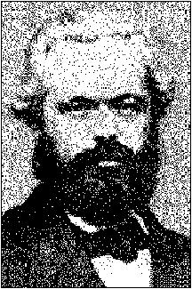

KARL MARXPREFACE AND
|
 |
This booklet contains Marx's Preface and Introduction to A Contribution to the Critique of Political Economy, and Engels' two articles on that work by Marx. The Introduction, actually an unfinished rough draft, is taken from Marx's economic manuscripts of 18576-58.
The translations of Marx's Preface and Engels' articles largely follow those on Karl Marx and Frederick Engels, Selected Works, Foreign Languages Publishing House, Moscow, 1951, Vol. I, while the translation of Marx's Introduction is to some extent based on that in the appendix to Marx, A Contribution to the Critique of Political Economy, Progress Publishers, Moscow, 1970. However, in comparing these translations with the original German in Marx and Engels Werk, Dietz Verlag, Berlin, 1961, Vol. 13, it was found necessary to make numerous corrections and revisions of the Moscow English version of the Introduction.
The notes at the end of the book are largely adopted from those in the German edition, with some modifications, excisions and additions.
|
PREFACE TO A CONTRIBUTION TO THE CRITIQUE OF |
| |||
|
INTRODUCTION TO A CONTRIBUTION TO THE CRITIQUE OF |
| |||
|
I. |
Production, Consumption, Distribution, Exchange
(Circulation) |
| ||
|
|
1. |
Production |
8 | |
|
|
2. |
General Relation of Production to Distribution, Exchange and Consumption |
| |
|
|
|
[Production and Consumption ] |
17 | |
|
|
3. |
The Method of Political Economy |
30 | |
|
|
4. |
Production. Means of Production and
Relations of Production. Relations of Production and
Relations of Circulation. Forms of the State and Forms of
Consciousness in Realtion to Relations of Production and
Circulation. Legal Relations. Family Relations |
| |
|
APPENDIX | ||||
|
KARL MARX, A CONTRIBUTION TO THE CRITIQUE OF |
| |||
|
46 | ||||
|
60 | ||||
page 1
I examine the system of bourgeois economy in the following order: capital, landed property, wage-labour; the state, foreign trade, the world market. Under the first three headings, I examine the economic conditions of existence of the three great classes into which modern bourgeois society is divided; the interconnection of the three other headings is obvious at a glance. The first section of the first book, which deals with capital, consists of the following chapters: 1) the commodity; 2) money or simple circulation; 3) capital in general. The present part consists of the first two chapters. All the material lies before me in the form of monographs, which were written at widely separated periods not for publication but for self-clarification, and reworking them coherently according to the plan I have indicated will depend upon external circumstances.
I am withholding a general introduction* I had drafted, since on closer consideration it seems to me confusing to anticipate results which still have to be proved, and the reader who
page 2
really wishes to follow me will have to decide to advance from the particular to the general. A few brief remarks regarding the course of my own study of political economy may, however, be appropriate here.
Although my special field of study was jurisprudence, I pursued it only as a discipline subordinate to philosophy and history. In the year 1842-43, as editor of the Rheinische Zeitung,[2] I first found myself in the embarrassing position of having to discuss so-called material interests. The deliberations of the Rhenish Landtag on thefts of timber and the division of landed property; the official controversy started by Herr von Schaper, then Oberpräsident of the Rhine Province, against the Rheinische Zeitung about the conditions of the Moselle peasantry, and finally the debates on free trade and protection gave me the first occasion to occupy myself with economic questions. On the other hand, an echo of French socialism and communism, slightly tinged by philosophy, became audible in the Rheinische Zeitung at a time when the good will "to go forward" greatly outweighed knowledge of the subject. I objected to this dilettantism, but at the same time frankly admitted in a controversy with the Allgemeine Augsburger Zeitung[3] that my previous studies did not allow me to venture any opinion on the content of the French tendencies. When the publishers of the Rheinische Zeitung laboured under the illusion that it might be possible to secure a remission of the death sentence passed on the paper by a more compliant policy on its part, I eagerly grasped the opportunity to withdraw from the public stage to the study.
The first work I undertook to dispel the doubts assailing me was a critical review of the Hegelian philosophy of right, the introduction to which appeared in the Deutsch-Französische Jahrbücher issued in Paris in 1844.[4] My inquiry led to
page 3
the conclusion that neither legal relations nor forms of state could be grasped whether by themselves or on the basis of a so-called general development of the human mind, but on the contrary they have their origin in the material conditions of existence, the totality of which Hegel, following the example of the Englishmen and Frenchmen of the eighteenth century, embraces within the term "civil society"; that the anatomy of this civil society, however, has to be sought in political economy. I began the study of the latter in Paris and continued it in Brussels, to which I moved owing to an expulsion order issued by M. Guizot. The general conclusion at which I arrived and which, once reached, became the guiding principle of my studies can be summarized as follows. In the social production of their existence, men enter into definite, necessary relations, which are independent of their will, namely, relations of production corresponding to a determinate stage of development of their material forces of production. The totality of these relations of production constitutes the economic structure of society, the real foundation on which there arises a legal and political superstructure and to which there correspond definite forms of social consciousness. The mode of production of material life conditions the social, political and intellectual life-process in general. It is not the consciousness of men that determines their being, but on the contrary it is their social being that determines their consciousness. At a certain stage of their development, the material productive forces of society come into conflict with the existing relations of production or -- what is merely a legal expression for the same thing -- with the property relations within the framework of which they have hitherto operated. From forms of development of the productive forces these relations turn into their fetters. At that point an era of social revolution
page 4
begins. With the change in the economic foundation the whole immense superstructure is more slowly or more rapidly transformed. In considering such transformations it is always necessary to distinguish between the material transformation of the economic conditions of production, which can be determined with the precision of natural science, and the legal, political, religious, artistic or philosophic, in short, ideological, forms in which men become conscious of this conflict and fight it out. Just as one does not judge an individual by what he thinks about himself, so one cannot judge such an epoch of transformation by its consciousness, but, on the contrary, this consciousness must be explained from the contradictions of material life, from the existing conflict between the social forces of production and the relations of production. A social order never perishes before all the productive forces for which it is broadly sufficient have been developed, and new superior relations of production never replace older ones before the material conditions for their existence have matured within the womb of the old society. Mankind thus inevitably sets itself only such tasks as it can solve, since closer examination will always show that the task itself arises only when the material conditions for its solution are already present or at least in the process of formation. In broad outline, the Asian, ancient, feudal and modern bourgeois modes of production may be designated as progressive epochs of the socio-economic order. The bourgeois relations of production are the last antagonistic form of the social process of production -- antagonistic not in the sense of an individual antagonism but of an antagonism growing out of the social conditions of existence of individuals; but the productive forces developing in the womb of bourgeois society simultaneously create the material conditions
page 5
for the solution of this antagonism. The prehistory of human society therefore closes with this social formation. Frederick Engels, with whom I maintained a constant exchange of ideas by letter after the publication of his brilliant sketch of the critique of economic categories[5] (in the Deutsch Französische Jahrbücher ), arrived by another road (compare his The Condition of the Working Class in England [6]) at the same result as I, and when in the spring of 1845 he too came to live in Brussels, we decided to set forth together our view as opposed to the ideological one of German philosophy, in fact to settle accounts with our former philosophical conscience. The resolve was carried out in the form of a critique of post-Hegelian philosophy.[7] The manuscript, two large octavo volumes, had long ago reached its place of publication in Westphalia when we were informed that owing to changed circumstances its printing was not permitted. We abandoned the manuscript to the gnawing criticism of the mice all the more willingly since we had achieved our main purpose -- self-clarification. Of the scattered works in which we then presented one or another aspect of our views to the public, I shall mention only the Manifesto of the Communist Party, jointly written by Engels and myself, and Discours sur le libre échange (Lecture on Free Trade ), which I myself published. The decisive points in our view were first outlined in a scientific, although polemical, form in my Misère de la philosophie (The Poverty of Philosophy [8]). . ., which was aimed at Proudhon and which appeared in 1847. The publication of an essay on Wage-Labour [9] written in German in which I brought together the lectures I had given on this subject at the German Workers' Association in Brussels,[10] was interrupted by the February Revolution and as a result my forcible removal from Belgium.
page 6
The publication of the Neue Rheinische Zeitung [11] in 1848 and 1849 and subsequent events interrupted my economic studies, which I could only resume in 1850 in London. The enormous amount of material on the history of political economy which is accumulated in the British Museum, the favourable vantage point afforded by London for the observation of bourgeois society, and finally the new stage of development which the latter seemed to have entered with the discovery of gold in California and Australia, induced me to start again from the very beginning and to work critically through the new material. These studies led partly of themselves into apparently quite remote disciplines on which I had to dwell at greater or lesser length. But in particular it was the imperative necessity of earning my living which reduced the time at my disposal. My collaboration, continued now for eight years, with the New York Tribune,[12] the leading Anglo-American newspaper, necessitated extraordinarily scattered studies, for it was only exceptionally that I wrote newspaper correspondence in the strict sense. Since articles on significant economic events in Britain and on the Continent formed a considerable part of my contributions, I was compelled to become conversant with practical details which lie outside the sphere of the science proper of political economy.
This sketch of the course of my studies in the domain of political economy is intended merely to show that my views -- no matter how they may be judged and how little they coincide with the interested prejudices of the ruling classes -- are the outcome of conscientious research carried on over many years. At the entrance to science, as at the entrance to hell, the demand must be made:
page 7
Karl Marx
London, January 1859
CRITIQUE OF POLITICAL ECONOMY [1]
* See below, pp. 8-45 --Ed.
Ogni viltà convien che qui sia morta."*
|
Printed in A Contribution to the |
Original in German |
Dante, The Divine Comedy, English translation, Illustrated Modern Library, Inc., 1944, p. 22.) --Ed.
page 8
(From the economic manuscripts of l857-58 )[13]
a) To begin with, the object before us is material production.
Individuals producing in society -- and hence socially determined production by individuals -- is of course the point of departure. The individual and isolated hunter or fisherman, with whom Smith and Ricardo begin, is one of the unimaginative fantasies of eighteenth-century romances à la Robinson Crusoe, which by no means express merely a reaction against over-refinement and a reversion to a misunderstood natural life, as cultural historians imagine. Rousseau's contrat social, which establishes a relationship and connection between naturally independent subjects by means of a contract, is as little based
page 9
on this kind of naturalism. This is an illusion and the merely aesthetic illusion of the Robinsonades, great and small. On the contrary, it is the anticipation of "civil society," which began to evolve in the sixteenth century and made giant strides towards maturity in the eighteenth. In this society of free competition the individual seems detached from the natural ties, etc., which in earlier historical epochs make him an appurtenance of a particular, limited human conglomeration. The prophets of the eighteenth century, on whose shoulders Smith and Ricardo were still standing with their whole weight, envisaged this eighteenth-century individual -- the product of the dissolution of feudal society on the one hand and of the new productive forces evolved since the sixteenth century on the other -- as an ideal whose existence belonged to the past. Not as a historical result, but as history's point of departure. Not as arising historically but as posited by nature, because this individual was in conformity with nature, in keeping with their idea of human nature. This illusion has been characteristic of every new epoch so far. Steuart, who in many respects was in opposition to the eighteenth century and as an aristocrat stood more firmly on historical ground, avoided this naive view.
The further back we trace the course of history, the more does the individual, and hence also the producing individual, appear as dependent and belonging to a larger whole: at first, still quite naturally, to the family and to the family extended into the clan [Stamm ]; later to the community in its various forms as it arises from the clash and fusion of clans. It is only in the eighteenth century, in "civil society" that the various forms of social connection confront the individual as mere means for his private ends, as external necessity. But the epoch which produces this standpoint, namely, that of the
page 10
isolated individual, is precisely the epoch of the (as yet) most highly developed social (according to this standpoint, general) relations. Man is a zoon politikon[*] in the most literal sense, not only a social animal, but an animal that can be individuated only within society. Production by an isolated individual outside society -- a rare event, which may well occur when a civilized person who already possesses the force of society within himself dynamically is accidentally cast into the wilderness -- is just as preposterous as the development of language without individuals living together and talking to one another. It is unnecessary to dwell on this any further. The point need not have been mentioned at all, if this nonsense, which had rhyme and reason for the people of the eighteenth century, had not again been pulled back in all seriousness into modern political economy by Bastiat, Carey, Proudhon, etc. Naturally, it is very pleasant for Proudhon and others to be able to explain the origin of an economic relationship -- whose historical source he does not know -- in a historico-philosophical manner by means of myths, according to which Adam or Prometheus hit upon the ready-made idea, which was then put into practice, etc. Nothing is more tedious and dull than the fantasies of locus communis.**
Thus whenever we speak of production, we always have in mind production at a definite stage of social development -- production by social individuals. It might therefore seem that, in order to speak of production at all, we must either trace the historical process of development in its various phases, or else declare from the very beginning that we are
page 11
examining a particular historical epoch, such as for instance modern bourgeois production, which is indeed our proper theme. All epochs of production, however, have certain features in common, common determinations.[14] Production in general is an abstraction, but a reasonable abstraction insofar as it actually stresses and fixes the common aspects and thus saves us from repetition. Yet this general concept, or the common aspect which has been separated out by comparison, is itself an articulated manifold comprising divergent determinations. Some elements are found in all epochs, others are common only to a few. The most modern and the most ancient epochs will have [certain] determinations in common. Production without them is inconceivable; but although the most highly developed languages have laws and characteristics in common with the least developed ones, it is precisely the divergence from these general and common features which determines their development. It is necessary to differentiate those determinations which apply to production in general in order not to forget the essential dissimilarities in view of the unity that follows from the very fact that the subject, mankind, and the object, nature, are the same. For instance, the entire wisdom of those modern economists who demonstrate the eternity and harmony of existing social relations depends on this forgetting. For example, no production is possible without an instrument of production, even if this instrument is only the hand. No production is possible without past, accumulated labour, even if this labour is only the dexterity gathered and concentrated in the hand of the savage through repeated practice. Capital is among other things also an instrument of production, also past, objectified labour. Consequently capital is a general and eternal relation of nature -- that is, provided one omits precisely the specific character which alone turns the "instrument
page 12
of production" or "accumulated labour" into capital. The whole history of the relations of production thus appears, in Carey for instance, as a malevolent perversion brought about by governments.
If there is no production in general, there is also no general production. Production is always a particular branch of production -- e.g., agriculture, cattle-breeding, manufacture -- or it is a totality. However, political economy is not technology. The relation of the general determinations of production at a given social stage to the particular forms of production is to be set forth elsewhere (later).
Finally, production is not only particular production, it is invariably only a certain social body, a social subject, which is active in a greater or narrower sum of branches of production. Nor does the relationship between a scientific presentation and the actual process belong here yet. Production in general. Particular branches of production. Totality of production.
It is fashionable to preface economic works with a general part -- and it is just this part that appears under the heading "Production," see for instance John Stuart Mill[15] -- which deals with the general conditions of all production. This general part comprises or purports to comprise:
1) The conditions without which production is impossible. In fact this means only that the essential moments in all production are indicated. But, as we shall see, in fact this reduces itself to a few very simple characteristics, which are expanded into trivial tautologies.
2) The conditions which promote production to a greater or lesser degree, as in the case of Adam Smith's progressive and stagnant state of society. To elevate this, which has its
page 13
value as an aperçu [*] in his work, to scientific significance would require investigations into the degree of productivity at various periods in the development of individual nations -- an investigation which lies outside the proper limits of the subject, but which, insofar as it does belong there, must be brought in in the development of competition, accumulation, etc. The answer in the usual formulation amounts to the general statement that an industrial nation achieves the peak of its production when it arrives at its historical peak as a whole. In fact. The industrial peak of a nation when its principal aim is not yet gain but the process of gaining. In this respect the Yankees are superior to the English. Or also that, for example, certain races, layouts, climates, natural conditions, such as maritime location, fertility of the soil, etc., are more favourable to production than others. This again amounts to the tautology that wealth is more easily created to the extent that its subjective and objective elements are present in greater degree.
But none of this really concerns the economists in this general part. The aim is rather -- see for example Mill -- to represent production, as distinct from distribution, etc., as governed by eternal natural laws independent of history, and the opportunity is taken to smuggle in bourgeois relations surreptitiously as irrevocable natural laws of society in abstracto. This is the more or less conscious purpose of the whole procedure. In distribution, however, it is alleged that mankind has in fact allowed itself to be arbitrary in all kinds of ways. Quite apart from the crude tearing asunder of production and distribution and of their real relationship, it must be obvious from the outset that, however varied distribution may have been at differ-
page 14
ent stages of society, it must be possible here, just as with production, to bring out the common characteristics, and just as possible to confuse and efface all historical differences in general human laws. For example, the slave, the serf, the wage-labourer all receive a quantity of food enabling them to exist as slave, serf or wage-labourer. The conqueror who lives on tribute, or the official who lives on taxes, or the landowner who lives on rent, or the monk who lives on alms, or the Levite who lives on tithes, all receive a quota of the social product which is determined by other laws than that of the slave's, and so on. The two main points which all economists put under this head are: 1) property; and 2) its protection by the judiciary, police, etc. Only a very brief reply to them is needed:
Regarding 1): all production is appropriation of nature by an individual within and through a specific form of society. In this sense it is a tautology to say that property (appropriation) is a condition of production. But it is quite ridiculous to make a leap from this to a specific form of property, e.g., private property (this is moreover an antithetical form, which equally presupposes non-property as a condition). Rather history points to common property (e.g., among the Hindus, Slavs, ancient Celts, etc.) as the original form, a form which in the shape of communal property plays a significant role for a long time. The question whether wealth develops better under this or that form of property is not yet even an issue here. But that there can be no production and hence no society either where no form of property exists is a tautology. Appropriation which appropriates nothing is contradictio in subjecto.*
Regarding 2): safeguarding of acquisitions, etc. If these trivialities are reduced to their real content, they say more
page 15
than their preachers know. Namely, that every form of production creates its own legal relations, form of government, etc. The crudity and lack of comprehension consist in bringing things organically belonging together into a haphazard relation, into a mere reflex connection. The bourgeois economists only see that production is carried on better with modern police than, e.g., under the law of the cudgel. They only forget that the law of the cudgel too is law, and that the right of the stronger still survives in a different form even in their "constitutional state."
When the social conditions corresponding to a particular stage of production are either still arising or are already passing away, disturbances in production naturally occur, although differing in degree and effect.
To sum up: there are characteristics which are common to all stages of production and which are established in thought as general; but the so-called general conditions of all production are nothing but these abstract moments with which no real historical stage of production may be grasped.
Before entering on a further analysis of production, it is necessary to consider the various headings which economists place alongside it.
The obvious and shallow notion is: -- In production the members of society appropriate (create, fashion) natural products in accordance with human needs; distribution determines the proportion in which the individual shares these products; exchange brings him the particular products into which he wants to convert the quantity he receives through
page 16
distribution; finally, in consumption the products[*] become objects of use and pleasure, of individual appropriation. Production creates objects corresponding to needs; distribution distributes them according to social laws; exchange further distributes what has already been distributed, in conformity with individual needs; finally, in consumption the product quits this social movement, it becomes the direct object and servant of an individual need and satisfies it in use. Production thus appears as the point of departure, consumption as the final point, distribution and exchange as the middle, which has a dual form, since distribution is defined as proceeding from society and exchange as proceeding from individuals. The person objectifies himself in production, the thing subjectifies itself in consumption;[**] in distribution society undertakes mediation between production and consumption in the form of general, dominant determinations; in exchange they are mediated through the contingent determinateness of the individual.
Distribution determines the relation (the quantity) of the products accruing to the individual; exchange determines the products in the form in which the individual demands the share allotted to him by distribution.
Production, distribution, exchange and consumption thus form a regular syllogism, with production as the general, distribution and exchange as the particular, and consumption as the singular in which the whole is joined together. This is indeed a connection, but a superficial one. Production is determined by general laws of nature, distribution by social accident, and it may therefore influence production more or less
page 17
favourably; exchange lies between the two, as a formal social movement; and the concluding act of consumption, which is considered not only as the end purpose but as the end in itself, falls properly outside economics, except insofar as it reacts in turn on the point of departure and begins the whole process afresh.
The opponents of the political economists -- whether inside or outside its domain -- who accuse the latter of barbarously tearing apart things belonging together are on the same level as they are or on a lower one. Nothing is more common than the accusation that the political economists regard production too exclusively as an end in itself, and that distribution is equally important. This accusation is itself based on the economic notion that distribution dwells as an autonomous, independent sphere side by side with production. Or that these moments are not grasped in their unity. As though this tearing apart had forced itself on to real life from the textbooks and not, on the contrary, on to the textbooks from real life, and as though it were a question of the dialectical balancing of concepts and not of the resolution of real relations.
Production is also immediately consumption. Twofold consumption, subjective and objective: [Firstly,] the individual, who develops his abilities while producing, is also expending them, using them up in the act of production, just as natural procreation is a consumption of vital energy. Secondly, consumption of the means of production, which are employed and used up and in part (as for instance in combustion) are broken down into their natural elements again.
page 18
Likewise, consumption of raw material which does not retain its natural form and qualities and which, on the contrary, is used up. The act of production itself is thus in all its phases also an act of consumption. But the economists concede this. Production as immediately identical with consumption, consumption as immediately coincident with production, they call productive consumption. This identity of production and consumption amounts to Spinoza's proposition: Determinatio est negatio.[*]
But this definition of productive consumption is only advanced in order to separate consumption that is identical with production from consumption proper, which is regarded by contrast as the destructive antithesis of production. Let us therefore consider consumption proper.
Consumption is also immediately production, just as in nature the consumption of the elements and of chemical substances is the production of a plant. It is obvious that man produces his own body, through eating, for example, one form of consumption. But this holds for every kind of consumption which in one way or another produces human beings in some specific aspect. Consumptive production. Nevertheless, says economics, this production which is identical with consumption is a second production arising from the destruction of the first product. The producer objectified himself in the former, the thing made by him personifies itself in the latter. Hence this consumptive production -- although it constitutes an immediate unity of production and consumption -- is essentially different from production proper. The immediate unity, in which production coincides with consumption and consumption with production, permits their immediate duality to remain.
page 19
Production is thus immediately consumption, consumption is immediately production. Each is immediately its opposite. But at the same time a mediating movement takes place between the two. Production mediates consumption, for which it makes the material and which would be without an object in its absence. But consumption also mediates production by creating for the products the subject for whom they are products. The product only obtains its last finish in consumption. A railway on which no one travels, which is there fore not used up, not consumed, is only a railway dynamei,[*] not actually. Without production no consumption; but without consumption no production either, since production would then be aimless. Consumption produces production in two ways:
1) because a product becomes a real product only through consumption. For example, a dress becomes a real dress only in the act of being worn; a house which is uninhabited is in fact no real house; in other words, a product, as distinct from a mere natural object, proves itself as such, becomes a product, only in consumption. Only by destroying the product does consumption give it the finishing touch; for the product is a product,** not because it is materialized activity, but only as an object for the active subject;
2) because consumption creates the need for new production, and therefore the ideal; inherently impelling ground for production, which is its presupposition. Consumption creates the motive for production; it also creates the object which is active in production as determining its goal. If it is clear that externally production furnishes the object of consumption, it is no less clear that consumption ideally posits the object of
page 20
production as an internal image, as a need, as a motive, as a purpose. It creates the object of production in an as yet subjective form. No production without a need. But consumption reproduces the need.
In its turn production correspondingly,
1) supplles consumption[*] with the material, with the object. Consumption without an object is no consumption; in this respect, therefore, production creates, produces, consumption.
2) But it is not only the object that production creates for consumption. It also gives consumption its precise nature, its character, its finish. Just as consumption gave the product its finish as product, so production gives the finish to consump tion. For one thing, the object is not an object in general, but a specific object which must be consumed in a specific way to be mediated in its turn by production. Hunger is hunger, but the hunger that is satisfied by cooked meat eaten with knife and fork is a different hunger from that which devours raw meat with hand, nail and tooth. Not only the object of consumption but also the manner of consumption is therefore produced by production, not only objectively but also subjectively. So production creates the consumer.
3) Production not only provides the material for a need, but it also provides a need for the material. When consumption emerges from its initial natural crudity and immediacy -- and its remaining in that state would itself be the result of production being stuck in a state of natural crudity -- it itself is mediated as an urge by the object. The need it feels for the object is created by perception of the latter. Like every other product an objet d'art creates a public with artistic taste
page 21
and a capacity to enjoy beauty. Production accordingly produces not only an object for the subjest, but also a subject for the object.
Hence production produces consumption 1) by creating the material for it; 2) by determining the manner of consumption; 3) by creating as a want in the consumer products which it initially posits as an object. It therefore produces the object of consumption, the manner of consumption and the urge for consumption. Similarly, consumption produces the disposition of the producer by soliciting him as a goal-determining need.
Thus the identities between consumption and production appear threefold:
1) Immediate identity : Production is consumption; consumption is production. Consumptive production. Productive consumption. Economists call both productive consumption. But make another distinction. The former figures as reproduction, the latter as productive consumption. All investigations of the former are concerned with productive or unproductive labour, those of the latter with productive or non-productive consumption.
2) Each appears as a means for the other; is mediated by it; what is called their mutual dependence; a movement through which they are mutually related and appear to be indispensable to each other, but nevertheless remain external to each other. Production creates the material as the external object for consumption; consumption creates the need as the internal object, as the purpose of production. Without production no consumption; without consumption no production. This appears in many forms in economics.
3) Production is not only immediately consumption, and consumption immediately production; not only is production
page 22
a means of consumption and consumption the purpose of production -- i.e., each provides the other with its object, production supplying the external object of consumption and consumption the conceptual object of production; but also each of them is not only immediately the other and not only mediates the other, but in addition each of them creates the other by completing itself, it creates itself as the other. Consumption consummates the act of production only by completing the product as product, by destroying it, by using up its independent material form, by enabling the latent capacity developed in the initial act of production to attain perfection through the need for repetition; therefore it is not only the concluding act through which the product becomes product, but also that through which the producer becomes producer. On the other hand, production produces consumption by creating the specific manner of consumption, and further by creating the incentive for consumption, the capacity to consume as a need itself. This last identity, specified under point 3, is much discussed in economics with reference to the relation of demand and supply, of objects and needs, of needs created by society and natural needs.
Hence nothing is simpler for a Hegelian than to posit production and consumption as identical. And this has been done not only by socialist belletrists but also by prosaic economists themselves, for example Say, in the form that when one considers a nation, its production is its consumption. Or also mankind in abstracto. Storch demonstrated Say's error, since a nation, for instance, does not consume its whole product, but also creates means of production, etc., fixed capital, etc.[16] Moreover, to regard society as a single subject is to regard it incorrectly -- speculatively. With a single subject production and consumption appear as moments of a single act. The
page 23
essential point to emphasize here is that whether production and consumption are considered as activities of a single subject or of separate individuals, they in any case appear as moments of a single process in which production is the actual point of departure and accordingly the predominant moment. Consumption, as a pressing necessity, as a need, is itself an internal moment of productive activity. The latter, however, is the point of departure of realization and thus also the predominant moment, the act in which the entire process runs its course again. The individual produces an object and turns it into himself again by consuming it, but as a productive and self-reproductive individual. Consumption thus appears as a moment of production.
In society, however, the relation of the producer to the product after its completion is an external one, and the return of the product to the subject depends on his relations to other individuals. The product does not immediately come into his possession. Its immediate appropriation, moreover, is not his aim, if he produces within society. Distribution steps in between the producer and the products, hence between production and consumption, determining his share in the world of products according to social laws.
Now, does distribution stand as an independent sphere alongside and outside production?
When one considers the ordinary run of works on economics, one is immediately struck by the fact that everything is treated twice there, e.g., ground-rent, wages, interest and profit figure under distribution, while under production land, labour and capital appear as factors of production. As for
page 24
capital, it is evident from the outset that it is posited twice, 1) as a factor of production; 2) as a source of income, i.e., as a determining and determined form of distribution. Interest and profit therefore appear as such in production, insofar as they are forms in which capital increases, grows, consequently moments of its own production. As forms of distribution, interest and profit presuppose capital as a factor of production. They are modes of distribution whose precondition is the existence of capital as a factor of production. They are like wise modes of reproduction of capital.
Likewise wages are wage-labour when considered under another heading; the determinateness which labour has here as a factor of production appears as a determination of distribution. If labour were not distinguished as wage-labour, its manner of sharing in the product would not appear as wages, as for instance in slavery. Finally ground-rent -- to take at once the most advanced form of distribution through which landed property shares in the product -- presupposes large-scale landed property (strictly speaking, large-scale agriculture) as a factor of production, and not merely land as such, exactly as wages do not presuppose just labour as such. The relations and methods of distribution thus appear merely as the reverse aspect of the factors of production. An individual who participates in production in the form of wage-labour participates in the products, the results of production, in the form of wages. The structure of distribution is wholly determined by the structure of production. Distribution is itself a product of production, not only with regard to its object, for only the results of production can be distributed, but also with regard to its form, for the particular way of participating in production determines the specific form of distribution, the form in which participation in distribution occurs. It is altogether an
page 25
illusion to posit land in production and ground-rent in distribution, etc.
Economists like Ricardo, who are most often accused of having paid attention only to production, have accordingly regarded distribution as the exclusive subject of economics, for they have instinctively considered the forms of distribution as the most precise expression in which the factors of production take shape in a given society.
To the single individual, distribution naturally appears as a social law that determines his position within the framework of production within which he produces and distribution is therefore antecedent to production. The individual originally has neither capital nor landed property. Through social distribution he is assigned to wage-labour from his birth. But this state of being assigned is itself the result of the existence of capital and landed property as independent factors of production.
When one considers whole societies, still another aspect of distribution appears to be antecedent to production and to determine it, as though it were a pre-economic fact. A conquering nation divides the land among the conquerors and in this way imposes a determinate distribution and form of landed property and thus determines production. Or it may turn the conquered people into slaves, thus making slave-labour the basis of production. Or a nation may divide large estates into small parcels through a revolution, thus giving production a new character through the new distribution. Or legislation perpetuates land ownership in certain families, or distributes labour as a hereditary privilege, thus fixing it into a caste system. In all these cases, and they are all historical, it seems that distribution is not structured and determined by production but, on the contrary, production by distribution.
page 26
According to the most superficial interpretation distribution appears as the distribution of products, and therefore as further removed from and quasi-independent of production. But before distribution becomes the distribution of products, it is 1) the distribution of the instruments of production, and 2) which is another determination of the same relation? the distribution of the members of society among the various types of production (the subsumption of individuals under definite relations of production). It is evident that the distribution of the products is merely a result of this distribution, which is comprised within the very process of production and determines the structure of production. To examine production apart from this distribution which is included in it is obviously an empty abstraction, whereas conversely the distribution of the products is automatically determined by this distribution which originally forms a moment of production. Ricardo, whose object was to grasp modern production in its specific social structure and who is the economist of production par excellence, for this very reason declares that distribution and not production is the proper subject of modern economics. This again shows the inanity of those economists who treat production as an eternal truth, while banishing history to the domain of distribution.
The question of the relation between this form of distribution which determines production and production itself obviously belongs within production itself. If it is said that in this case at least, since production must proceed from a specific distribution of the instruments of production, distribution in this sense precedes and is a prerequisite of production, the answer would be that indeed production does have its conditions and prerequisites, which constitute its moments. At the very outset these may appear as spontaneous. Through
page 27
the process of production itself, however, they are transformed from spontaneous into historical conditions, and although they may appear as a natural prerequisite of production for one period, they are its historical result for another. They are continuously being changed within production itself. For example, the employment of machinery changed the distribution both of the instruments of production and of the products. Modern large-scale landed property is itself the result of modern trade and modern industry as well as of the application of the latter to agriculture.
All the above-mentioned questions ultimately resolve themselves into the role general historical relations play in production and its relation to the course of history in general The question clearly belongs to the discussion and analysis of production itself.
Yet in the trivial form in which these questions have been raised above, they can be dealt with equally briefly. In all conquests there are three possibilities. The conquering nation subjects the conquered nation to its own mode of production (for example, the English in Ireland in this century, and partly in India); or it allows the old mode to remain and is content with tribute (e.g., the Turks and Romans); or interaction takes place, which gives rise to a new system, a synthesis (partly in the Germanic conquests). In all cases the mode of production -- whether that of the conquering or of the conquered nation or the one resulting from the fusion of the two -- is the determinant of the new distribution that occurs. Although the latter appears as a prerequisite of the new period of production, it is thus itself in its turn a product of production, not only of historical production in general but of a specific historical mode of production.
page 28
The Mongols, for example, with their devastation of Russia, acted in conformity with their system of production, cattle-breeding, for which vast uninhabited stretches of land are a principal requirement. The Germanic barbarians, for whom agriculture with serfs was the traditional form of production and who lived in isolation over the countryside could the more easily subject the Roman provinces to these conditions because the concentration of landed property which had occurred there had already completely overthrown the older agricultural relations.
It is a traditional view that in certain periods people lived by plunder alone. But in order to be able to plunder, there must be something to plunder, consequently production. And the mode of plunder is in turn itself determined by the mode of production, e.g., a stock-jobbing nation cannot be robbed in the same way as a nation of cowherds.
In the case of the slave the instrument of production is stolen directly. But then the production of the country for which the slave is stolen must be so organized as to admit of slave-labour, or (as in South America, etc.) a mode of production appropriate to slave-labour must be created.
Laws may perpetuate an instrument of production, e.g., land, in certain families. These laws acquire economic significance only if large-scale landed property is in harmony with the social mode of production, as for instance in England. Small-scale agriculture was carried on in France despite the large estates, which were therefore broken up by the Revolution. But, can laws, for example, perpetuate parcelization? Landed property tends to become concentrated again despite these laws. The influence of laws on the preservation of conditions of distribution and therefore their effect on production should be examined as a separate item.
page 29
Circulation itself is merely a particular moment of exchange or is also exchange regarded in its totality.
Insofar as exchange is only a moment mediating between production with the distribution it determines and consump tion, and insofar, however, as the latter itself appears as a moment of production, exchange is manifestly also included as a moment in production.
Firstly, it is clear that the exchange of activities and abilities which occurs within production itself belongs directly to it and essentially constitutes it. Secondly, the same holds for the exchange of products, insofar as it is a means of finishing the product and making it ready for immediate consumption. The act of exchange is to that extent comprised in production. Thirdly, by virtue of its organization the so-called exchange between dealers and dealers is entirely determined by production, as a productive activity itself. Exchange only appears as independent and indifferent with respect to production in the last stage, where the product is immediately exchanged for consumption. But 1) there is no exchange without division of labour, whether the latter is spontaneous or is already a historical product; 2) private exchange presupposes private production; 3) the intensity of exchange as well as its extent and manner are determined by the development and structure of production: e.g., exchange between town and country, exchange in the countryside, in the town, etc. In all its moments exchange thus appears either directly comprised in production or else determined by it.
The conclusion we arrive at is not that production, distribution, exchange and consumption are identical, but that they all constitute members of a single whole, differences within a
page 30
single unity. Production predominates both over itself in the antithetical determination of production and over the other moments. With it the process always starts afresh. It is self-evident that exchange and consumption cannot be predominant. Similarly for distribution as the distribution of the products. But as distribution of the factors of production, on the other hand, it is itself a moment of production. A specific production thus determines a specific consumption, distribution and exchange as well as the specific relations of these different moments to one another. Production in its one-sided form, of course, is in its turn determined by the other moments. For example, if the market, i.e., the sphere of exchange, expands, then production grows in range and becomes more deeply differentiated. Production changes with a change in distribution, e.g., with the concentration of capital, a different distribution of the population between town and country, and the like. Lastly, the needs of consumption determine production. Interaction takes place among the various moments. Such is the case with every organic whole.
When we consider a given country from a politico-economic standpoint, we begin with its population, the division of the latter into classes, town, country, coast, the different branches of production, exports and imports, annual production and consumption, commodity prices, etc.
It seems to be correct to start with the real and concrete, the actual prerequisites, thus in economics, e.g., with population, which is the basis and the subject of the whole social process of production. Yet on closer consideration this proves to be wrong. The population is an abstraction if, for instance, I
page 31
omit the classes of which it is composed. These classes in turn remain an empty phrase if I am ignorant of the elements on which they are based, e.g., wage-labour, capital, and so on. These presuppose exchange, division of labour, prices, etc. For example, capital is nothing without wage-labour, without value, money, price, etc. If, therefore, I were to start with population, it would be a chaotic idea of the whole and through more precise determination I would arrive analytically at increasingly simple concepts; from the concrete as imagined to increasingly tenuous abstractions until I reached the most simple determinations. From there it would be necessary to take the journey again backwards until I finally arrived at population again, but this time not as a chaotic idea of a whole, but as a rich totality with many determinations and relations. The first course is historically the one taken by economics at its inception. The seventeenth-century economists, for example, always began with the living whole, the population, the nation, the state, several states, etc., but they always end by discovering through analysis a few determining abstract, general relations, such as division of labour, money, value, etc. As soon as these individual moments were more or less clearly established and deduced, economic systems were begun which ascended from what is simple, such as labour, division of labour, need, exchange-value, to the state, exchange between nations and the world market. Scientifically the latter is obviously the correct method. The concrete is concrete because it is the summing up of many determinations, thus the unity of the manifold. Therefore, it appears in thought as a process of summing up, a result, and not the point of departure, although it is the real point of departure and thus also the point of departure of perception [Anschauung ] and conception. On the first road the rounded
page 32
concept was dissolved into an abstract determination; on the second abstract determinations lead by way of thought to the reproduction of the concrete. Hegel accordingly succumbed to the illusion of conceiving the real as the result of the self concentration, self-immersion and self-generated self-movement of thought, whereas the method of ascending from the abstract to the concrete is simply the way in which thought appropriates the concrete, reproduces it as a concrete in the mind. But this is by no means the process of origination of the concrete itself. For example, the simplest economic category, e.g., exchange-value, presupposes population, a population moreover producing under specific conditions; as well as a certain kind of family, or community, or state, etc. It can never exist save as an abstract, one-sided relation of an already given concrete, living whole. But exchange-value as a category leads an antediluvian existence. Thus to consciousness -- and philosophical consciousness is determined in this way -- for which the conceiving mind is the real human being and hence the conceived world as such is the only reality, to consciousness, therefore, the movement of the categories appears as the real act of production -- which unfortunately gets only a jolt from outside -- whose result is the world; and this (which, however, is again a tautology) is true insofar as the concrete totality as a totality of thoughts, as a concrete mental phenomenon, is in fact a product of thinking, of conceiving; but by no means a product of the concept which thinks and gives birth to itself outside and above perception and conception, but a product of the working up of perception and conception into concepts. The totality, as it appears in the brain as a totality of thoughts, is a product of the thinking mind which appropriates the world in the only way possible for it, a way which differs from the artistic, religious and practical-
page 33
intelligent appropriation of this world. The real subject continues to exist independently outside the mind just as before; that is, so long as the mind operates merely speculatively, merely theoretically. The subject, society, must invariably be present in thought, therefore, as the premise in the theoretical method too.
But don't these simple categories also have an independent historical or natural existence preceding the more concrete ones? That depends. Hegel, for example, correctly begins the philosophy of right with possession, as the subject's simplest legal relation. But no ownership exists prior to the family or to master-servant relations, which are much more concrete relations. On the other hand, it would be correct to say that families and clan groups exist which as yet only possess, but have no property. The simpler category thus appears in relation to property as a relation of simple family or clan associations. In society at a higher stage it appears as a comparatively simple relation of a more advanced organization. However, the more concrete substratum of which possession is a relation is always presupposed. One can imagine an individual savage as possessing. In this case, however, possession is not a legal relation. It is wrong to say that historically possession develops into the family. On the contrary, possession invariably presupposes this "more concrete legal category." Yet this much remains: the simple categories express relations in which the less developed concrete may have realized itself without as yet positing the more many-sided connection or relation which is mentally expressed in the more concrete category; while the more developed concrete retains the same category as a subordinate relation. Money may exist and did exist historically before capital existed, before banks existed, before wage-labour existed, etc. Thus in this respect it can
page 34
be said that the simpler category can express the dominant relations of a less developed whole or the subordinate relations of a more developed whole, which already existed historically before this whole developed in the direction which is expressed in a more concrete category. To this extent the course of abstract thought, which ascends from the most simple to the composite, would appear to conform to the actual historical process.
It may be said on the other hand that there are certain highly developed, but nevertheless historically less mature, social forms in which the highest forms of economy, e.g., co-operation, developed division of labour, etc., are found without the existence of any sort of money, for instance in Peru. In Slav communities too, money -- and exchange which conditions it -- plays little or no role inside the individual community, but does so on their borders, in trade with others; and it is altogether wrong to place exchange in the heart of the community as its original constitutive element. On the contrary, in the beginning exchange appears in the relations among the different communities rather than among members of one and the same community. Moreover, although money plays a role very early and many-sidedly, nevertheless it is a predominant element in antiquity only among one-sidedly developed nations, trading nations. And even in the most advanced areas of antiquity, among the Greeks and Romans, its full development, which is presupposed in modern bourgeois society, appears only in the period of their decay. Thus this quite simple category appears in its intensity historically only in the most developed conditions of society. In no way does it permeate all economic relations. For example, in the Roman Empire even at the height of its developmeat the base remained taxes in kind and deliveries in kind. In fact the monetary
page 35
system only developed there completely in the army. It never laid hold of the totality of labour. Thus, although the simpler category may have existed historically before the more concrete one, it can attain its full intensive and extensive development precisely in a complex form of society, whereas the more concrete one was more completely developed in a less developed form of society.
Labour seems quite a simple category. The notion of labour in this general form, as labour in general, is also extremely old. Nevertheless, conceived in this simplicity from an economic point of view, "labour" is just as modern a category as the relations which produce this simple abstraction. The Monetary System, for example, still places wealth quite objectively as a thing existing outside itself, in money. Compared with this standpoint, it was a great advance when the Manufacturing or Mercantile System put the source of wealth not in the object but in subjective activity -- labour in trade and manufacture -- but it still considered this activity within the narrow confines of money-making. In contrast to this system, the Physiocratic one posits one specific form of labour -- agriculture -- as wealth-creating, and the object itself no longer in the guise of money, but as the product in general, as the general result of labour. In accordance with the narrow confines of the activity, this product always remains a naturally determined product, an agricultural product, a product of the earth par excellence.
It was an immense advance when Adam Smith rejected all restrictions on wealth-creating activity -- labour as such, neither manufacturing, nor commercial, nor agricultural labour, but one as much as the others. The abstract universality of wealth-creating activity is accompanied by the universality of the object defined as wealth, the product as such, or again
page 36
labour as such, but as past, objectified labour. How difficult and immense a transition this was is demonstrated by the fact that from time to time Adam Smith himself relapses into the Physiocratic System. Now it might seem that in this way there was found only the abstract expression for the simplest and most ancient relation in which human beings act as producers in whatever form of society. This is true in one respect. Not in another. Indifference with regard to a specific kind of labour presupposes a highly developed totality of real kinds of labour, no single one of which is the predominant one any longer. The most general abstractions arise as a rule only together with the richest concrete development, in which one thing appears common to many, common to all. At that point it ceases to be conceivable in a particular form alone. On the other hand, this abstraction of labour as such is not only the intellectual result of a concrete sum of labours. Indifference towards specific labour corresponds to a form of society in which individuals pass easily from one kind of labour to another, and in which the specific kind of labour is accidental, and therefore indifferent, to them. Labour, not only as a category but in reality, has become a means to create wealth in general and has ceased to be organically tied to particular individuals in a specific form. This state of affairs is at its most developed in the United States, the most modern form of bourgeois society in existence. Here, then, the abstraction of the category "labour," "labour as such," labour sans phrase, the point of departure of modern economics, becomes true in practice for the first time. Thus the simplest abstraction, which modern economics puts in the forefront and which expresses an ancient relation holding in all social formations, nevertheless appears to be true in practice as an abstraction only as a category of the most modern society. It might be said that what is a historical
page 37
product in the United States -- this indifference with regard to a particular kind of labour -- appears among the Russians, for instance, as a spontaneous disposition. But there is a devil of a difference between barbarians having a disposition to be applied to everything and civilized people who apply themselves to everything. And then this indifference of the Russians with regard to the specificity of labour corresponds in practice to their being traditionally embedded within one quite specific kind of labour, from which they are jarred loose only by external influences.
The example of labour strikingly demonstrates how even the most abstract categories, despite their validity -- precisely because of their abstraction -- for all epochs, are themselves equally the product of historical conditions even in the specific form of this abstraction, and they possess their full validity only for and within these conditions.
Bourgeois society is the most developed and complex historical organization of production. Therefore, the categories which express its relations, the comprehension of its structure, also allow an insight into the structure and the relations of production of all extinct social formations from the ruins and elements of which it built itself up, and the as yet partly un subdued remnants of which it still drags along inside itself, while what were mere intimations have developed their explicit significance, etc. Human anatomy provides a key to the anatomy of the ape. On the other hand, the intimations of higher forms in the subordinate species of animals can be understood only when the higher are already known. The bourgeois economy thus provides a key to the ancient economy, etc. But by no means in the fashion of those economists who obliterate all historical differences and who see bourgeois formations in all social formations. If you are familiar with
page 38
ground-rent, you can understand tribute, tithes, etc. But they do not have to be treated as identical. Moreover, since bourgeois society is itself only a contradictory form of development, it frequently contains relations from earlier societies though only in quite a stunted form or even in the form of travesties. For example, communal property. Thus although it is true that the categories of bourgeois economics possess some truth for all other social formations, this has to be taken cum grano salis.[*] They may contain these formations in a developed, stunted, caricatured, etc., form, but invariably with an essential difference. So-called historical progress generally depends on the fact that the latest form regards earlier ones as stages en route to itself and always conceives them one-sidedly, since it is able to criticize itself only rarely and under quite definite conditions -- of course we are not discussing historical periods which appear to themselves as periods of decay. The Christian religion was able to contribute to an objective understanding of earlier mythologies only when its self-criticism was to a certain extent, so to speak dynamei,** ready to start. Similarly, bourgeois economics attained an understanding of feudal, ancient and oriental economies only when the self-criticism of bourgeois society had begun. Insofar as the bourgeois economy did not mythologize by completely identifying itself with the past, its critique of the earlier economies, and especially of the feudal economy, with which it still had to struggle directly, resembled Christianity's critique of paganism or Protestantism's critique of Catholicism.
In the progress of the economic categories, as in the case of every historical, social science, it is always necessary to re-
page 39
member that the subject, in this context modern bourgeois society, is given in the mind as well as in reality, and that therefore categories express forms of existence and determinations of existence and frequently only individual aspects of this particular society, of this subject, and that consequently, scientifically too, this society by no means begins merely at the time when it is discussed as such. This is to be remembered because it will be immediately decisive for the sequence of the [categories]. For example, nothing seems more natural than to begin with ground-rent, with landed property, since it is tied up with the earth, the source of all production and all existence, and with agriculture, the first form of production in all more or less settled societies. But nothing would be more erroneous. In every social formation there is a specific kind of production which predominates over all the others and whose relations therefore determine their rank and influence. It is a general illuminant tingeing all other colours and modifying their specific features. It is a special ether determining the specific gravity of everything appearing in it. For example, pastoral peoples. (Peoples living exclusively on hunting or fishing are outside the point from which real development begins.) A certain form of tillage occurs sporadically among them. Landed property is determined by this. It is held in common and retains this form in larger or smaller measure according to the greater or lesser degree to which these peoples maintain their traditions, e.g., communal property among the Slavs. Among settled agricultural peoples -- the settled state already constituting a great advance -- where tillage predominates as in ancient and feudal society, even industry together with its organization and the forms of property corresponding to it has, more or less, the character of landed property and is either completely dependent on agri-
page 40
culture, as among the earlier Romans, or as in the Middle Ages, copies the organization of the countryside in the town and in urban relations. In the Middle Ages even capital -- unless it was pure money-capital -- in the shape of the traditional hand tool, etc., retained this character of landed property. It is the reverse in bourgeois society. Agriculture increasingly becomes a mere branch of industry and is completely dominated by capital. The same applies to ground rent. In all forms in which landed property rules, natural relations still predominate. In those in which capital rules, the social, historically created elements predominate. Ground rent cannot be understood without capital. But capital can be understood without rent. Capital is the all-dominant economic power of bourgeois society. It must form both the point of departure and the conclusion and it has to be analysed before landed property. After they have both been considered separately, their interrelation must be considered.
Therefore it would be impractical and wrong to let the economic categories succeed each other in the order in which they were historically decisive. Their order of succession is determined rather by their mutual relation in modern bourgeois society, and this is the exact opposite of what appears to be their natural order or what corresponds to the sequence of historical development. The point at issue is not the role that economic relations have historically played in the succession of various social formations. Even less is it their sequence "in the Idea" (Proudhon ) (a wishy-washy notion of the historical process). But rather their structure within modern bourgeois society.
The purity (abstract determinateness) of the merchant peoples -- Phoenicians, Carthaginians -- in the ancient world follows precisely from the predominance of the agricultural
page 41
peoples. Capital as merchant's or money-capital appears in this abstract form precisely where capital has not yet become the dominant element in society. Lombards and Jews occupied the same position with regard to mediaeval agrarian societies.
As a further illustration of the various roles which the same categories have played at different stages of society: one of the latest forms of bourgeois society, joint-stock companies. But they also appear at its beginning in the form of the great privileged trading companies endowed with a monopoly.
The very concept of national wealth creeps into the works of the economists of the seventeenth century as the notion that wealth is created solely for the state and that power is proportionate to this wealth -- a notion which still survives partly among eighteenth-century economists. This was the as yet unconsciously hypocritical form in which wealth and its production were proclaimed as the goal of modern states and which regarded them merely as a means for producing wealth.
The order has evidently to be arranged in the following way: 1) The general abstract determinations, which therefore appertain in some measure to all social formations, but in the sense set forth above. 2) The categories which constitute the internal structure of bourgeois society and on which the fundamental classes rest. Capital, wage-labour, landed property. Their relations. Town and country. The three great social classes. Exchange between them. Circulation. The (private) credit system. 3) The concentration of bourgeois society in the form of the state. Examined in relation to itself. The "unproductive" classes. Taxes. National debt. Public credit. Population. Colonies. Emigration. 4) International relations of production. International division of labour. International exchange. Exports and imports. Rate of exchange. 5) The world market and crises.
page 42
Notes regarding points to be mentioned here and not to be forgotten.
1) War developed earlier than peace; the way in which certain economic relations, e.g., wage-labour, machinery, etc., developed earlier as a result of war and in the armies, etc., than inside bourgeois society. The relations between the productive forces and the relations of circulation are also particularly plain in the army.
2) Relation of hitherto idealistic to realistic historiography. In particular, the so-called history of civilization, the old history of religion and states. (Something may be said of the various kinds of previous historiography in this context. So-called objective, subjective (moral among others). Philosophical.)
3) Secondary and tertiary phenomena, in general derivative, transmitted, not original relations of production. Influence of international relations here.
4) Objections to the materialism of this conception. Relation to naturalistic materialism.
5) Dialectic of the concepts productive force (means of production ) and relation of production, a dialectic the limits of which are to be determined and which does not annul the real differences.
6) Unequal relation of the development of material production to, e.g., that of art. The concept of progress is generally not to be grasped in the usual abstractness. Modern art,
page 43
etc. This disproportion is not as important and difficult to grasp as within practical-social relations themselves. For example, in education. Relation of the United States to Europe. However, the really difficult point to discuss here is how the relations of production develop unevenly as legal relations. Thus, for example, the relation of Roman civil law (less so for criminal and public law) to modern production.
7) This conception appears as a necessary development. But justification of chance. How. (Freedom, etc., as well.) (Influence of the means of communication. World history has not always existed; history as world history is a result.)
8) The point of departure is of course the situation determined by nature; subjective and objective. Clans, races, etc.
As regards art, it is well known that certain flourishing periods by no means correspond to the general development of society and hence to the material base, the skeleton as it were of its organization. For example, the Greeks compared to the moderns or also Shakespeare. It is even acknowledged that certain forms of art, e.g., the epic, can no longer be produced in their epoch-making classical form as soon as the production of art as such has begun; in other words that in the domain of art itself certain significant forms are only possible at an undeveloped stage of the development of art. If this is the case with the relation between different kinds of art within the sphere of art itself, it is not so strange that this should be the case with the relation of the entire domain of art to the general development of society. The difficulty lies only in the general formulation of these contradictions. As soon as they are specified, they are already explained.
Let us take, for example, the relation of Greek art and that of Shakespeare to the present time. It is well known that Greek mythology is not only the arsenal of Greek art but also its
page 44
foundation. Is the view of nature and of social relations which underlies the Greek imagination and therefore Greek [mythology] possible with self-acting mules, railways, locomotives and electric telegraphs? What is Vulcan compared with Roberts and Co., Jupiter with the lightning conductor, and Hermes with the Crédit mobilier?[17] All mythology subdues and dominates and fashions the forces of nature in the imagination and through the imagination; it disappears therefore with real mastery over them. What becomes of Fama side by side with Printing House Square? Greek art presupposes Greek mythology, i.e., nature and the social forms are already worked over in an unconsciously artistic way by the popular imagination. This is its material. Not just any mythology, i.e., not any random unconsciously artistic working over of nature (here including all that is objective, and hence society). Egyptian mythology could never be the foundation or womb of Greek art. But in any case a mythology. On no account, therefore, a social development which excludes every mythological and mythologizing relation to nature; which therefore demands of the artist an imagination independent of mythology.
From another aspect: is Achilles possible with powder and lead? Or in general the Iliad with the printing press and, still more, printing machines? Don't the song, the chant and the Muse cease with the printer's bar, so don't the conditions necessary for epic poetry disappear?
But the difficulty is not in understanding that Greek art and epic poetry are tied up with certain forms of social development. The difficulty is that they still give us aesthetic pleasure and in certain respects still hold as a norm and unattainable model.
A man cannot become a child again, or he becomes childish. But doesn't he enjoy the child's naiveté, and mustn't he strive
page 45
to reproduce its truth on a higher level himself? Doesn't the special character of every epoch come alive in its true nature in the nature of its children? Why shouldn't the historical childhood of humanity, in which it attained its most beautiful development, exert an eternal charm as a stage that will never recur? There are unruly children and precocious children. Many of the ancient peoples belong to this category. The Greeks were normal children. The charm of their art for us does not contradict the undeveloped stage of society on which it grew. Rather it is its result and is inseparably connected with the fact that the immature social conditions in which it arose and in which alone it could arise can never recur.
TO THE CRITIQUE OF POLITICAL ECONOMY
I. PRODUCTION, CONSUMPTION, DISTRIBUTION,
EXCHANGE (CIRCULATION)
1. PRODUCTION
* Social animal (in Greek). Aristotle, The Politics, Book 1, Chapter 2. --Ed.
** The commonplace. --Ed.
* Insight. --Ed.
* Contradiction in terms. --Ed.
EXCHANGE AND CONSUMPTION
* In the manuscript: "production." --Ed.
** In the manuscript: "the person." --Ed.
* Determination is negation. --Ed.
* Potentially (in Greek). --Ed.
** In the manucript: "production." --Ed.
* In the manuscript: "production." --Ed.
* With a grain of salt. --Ed.
** Potentially (in Greek). --Ed.
OF PRODUCTION. RELATIONS OF PRODUCTION
AND RELATIONS OF CIRCULATION.
FORMS OF THE STATE AND FORMS OF CONSCIOUSNESS
IN RELATION TO RELATIONS OF PRODUCTION AND
CIRCULATION. LEGAL RELATIONS. FAMILY RELATIONS
|
Written between the end of |
Original in German |
page 46
Part One, Franz Duncker, Berlin, 1859
by Frederick Engels
The Germans have long since shown that in all spheres of science they are equal, and in most of them superior, to the other civilized nations. Only one science, political economy, did not count a single German name among its leading lights. The reason is obvious. Political economy is the theoretical analysis of modern bourgeois society and therefore presupposes developed bourgeois conditions, conditions which could not prevail for centuries in Germany after the wars of the Reformation and the Peasant Wars and especially the Thirty Years' War. The separation of the Netherlands from the Empire[18] forced Germany out of world trade and from the outset reduced her industrial development to the pettiest proportions. While the Germans were so painfully and slowly recovering
page 47
from the devastations of the civil wars, while they were using up all their civic energy, which had never been very great, in a fruitless struggle against the customs barriers and crazy commercial regulations which every petty princeling and imperial baron imposed on the industry of his subjects, while the imperial cities with their guild mummery and patricianism were falling into decay -- Holland, England and France were conquering the leading positions in world trade, were founding colony after colony and developing manufacturing industry to the highest pitch of prosperity, until finally England assumed the leadership of modern bourgeois development through the agency of steam power, which only then imparted value to her coal and iron deposits. But no German political economy was possible so long as a struggle had still to be waged against such ludicrously antiquated remnants of the Middle Ages as fettered the material bourgeois development of Germany until 1830. Only with the establishment of the Customs Union[19] did the Germans arrive at a position in which they could at least understand political economy. From this time, in fact, there began the import of English and French economics for the benefit of the German bourgeoisie. Presently the learned fraternity and the bureaucracy seized hold of the imported material and worked it up in a fashion which does little credit to the "German spirit." From the medley of knights of industry, merchants, schoolmasters and bureaucrats dabbling in authorship there arose a German economic literature which is paralleled only by the German novel in triteness, shallowness, empty-headedness, verbosity and plagiarism. Among practical minded people the protectionist school of industrialists was the first to establish itself; and its authority, List, is still the best that German bourgeois economic literature has produced, although the whole of his glorious work is copied from the
page 48
Frenchman Ferrier, the theoretical originator of the Continental System.[20] In opposition to this trend the free-trade school was formed in the forties by merchants from the Baltic provinces, who stammeringly echoed the English Free Traders' arguments with childlike but selfish faith. Finally, among the schoolmasters and bureaucrats who had to handle the theoretical side of the discipline there were uncritical and desiccated collectors of herbaria like Herr Rau, smart-aleck speculators who translated foreign propositions into undigested Hegelian language, like Herr Stein, or literary gleaners in the field of the so-called history of civilization, like Herr Riehl. The upshot of all this was cameralistics,[21] a mush consisting of all sorts of extraneous matter, with a spattering of eclectic-economic sauce of the sort a state-employed law school graduate might find it useful to know for his final state board examination.
While the bourgeoisie, the schoolmasters and the bureaucracy in Germany were still labouring to learn by rote, and in some measure to understand, the first elements of Anglo-French economics as unassailable dogmas, the German proletarian party appeared on the scene. Its whole theoretical existence proceeded from the study of political economy, and scientific, independent German economics also dates from the moment of its emergence. This German economics rests essentially on the materialist conception of history, the basic features of which are briefly set forth in the preface* to the above-named work. The main points of this preface have already been published in Das Volk,[22] for which reason we refer to it. The proposition that "the mode of production of material life conditions the social, political and intellectual
page 49
life-process in general"; that all social and political relations, all religious and legal systems, all the theoretical outlooks which emerge in history can only be understood if the material conditions of life of the corresponding epoch have been under stood and the former are derived from these material conditions -- this proposition was a revolutionary discovery not only for economics but for all historical sciences (and all sciences which are not natural sciences are historical). "It is not the consciousness of men that determines their being, but on the contrary it is their social being that determines their consciousness." The proposition is so simple that it must be self-evident to anyone not bemused by idealist delusions. But it has highly revolutionary consequences not only for theory but also for practice. "At a certain stage of their development, the material productive forces of society come into conflict with the existing relations of production or -- what is merely a legal expression for the same thing -- with the property relations within the framework of which they have hitherto operated. From forms of development of the productive forces these relations turn into their fetters. At that point an era of social revolution begins.* With the change in the economic foundation the whole immense superstructure is more slowly or more rapidly trans formed. . . . The bourgeois relations of production are the last antagonistic form of the social process of production -- antagonistic not in the sense of an individual antagonism but of an antagonism growing out of the social conditions of existence of individuals; but the productive forces developing in the womb of bourgeois society simultaneously create the material conditions for the solution of this antagonism."** The
page 50
perspective of a tremendous revolution, the most tremendous revolution of all time, accordingly presents itself to us as soon as we pursue our materialist thesis further and apply it to the present.
But closer consideration immediately shows that this apparently simple proposition that the consciousness of men depends on their being and not the other way round at once and in its first consequences runs directly counter to all idealism, even the most concealed. All established and conventional views on historical matters are negated by it. The whole traditional mode of political reasoning falls to the ground; patriotic high-mindedness indignantly bristles up against such an unprincipled interpretation. It was thus inevitable that the new point of view should shock not only the representatives of the bourgeoisie but also the mass of French socialists who would fain unhinge the world with the magic formula, liberté, égalité, fraternité. But above all it excited great wrath among the German vulgar-democratic ranters. Nevertheless they have by preference attempted to exploit the new ideas in plagiaristic fashion, although with a rare lack of understanding.
The development of the materialist conception for even a single historical example was a scientific work which would have demanded years of tranquil study, for it is obvious that nothing can be done here with mere phrases, that only a mass of critically sifted historical material which has been completely mastered can enable one to accomplish such a task. The February Revolution thrust our Party on to the political stage and thus made the pursuit of purely scientific aims impossible for it. Nevertheless, the fundamental outlook runs like a red thread through all the literary productions of the Party. In all of them it is demonstrated in each particular case how the
page 51
action always originated from direct material impulses and not from the phrases accompanying it, how on the contrary the political and legal phrases, like the political actions and their results, followed from the material impulses.
When, after the defeat of the Revolution of 1848-49, a period set in during which it became increasingly impossible to influence Germany from abroad, our Party relinquished the field of emigrant squabbles -- for that remained the only action possible -- to the vulgar democrats. While the latter indulged in intrigues to their hearts' content, scuffling today, fraternizing tomorrow and washing all their dirty linen in public again the day after, while they went begging throughout America and started a new scandal immediately after over the division of the few coins garnered -- our Party was glad to find some respite for study again. It had the great advantage of possessing a new scientific outlook as its theoretical foundation, the working out of which kept it fully occupied; for this reason alone it could never become so deeply demoralized as the "great men" of the emigration.
The first fruit of these studies is the book under review.
In a work like the one before us there can be no question of a merely desultory criticism of separate chapters taken from economics, of the isolated treatment of this or that disputed economic question. Rather it is from the outset designed as a systematic integration of the whole complex of economic science, as a coherent development of the laws of bourgeois production and bourgeois exchange. This development is at the same time a critique of the whole of economic
page 52
literature, for economists are nothing but the interpreters of and apologists for these laws.
Since Hegel's death hardly any attempt had been made to develop a science in its own inner interconnection. The official Hegelian school had appropriated only the most simple devices from the master's dialectics and applied them to anything and everything, often moreover with ludicrous clumsiness. For it Hegel's whole heritage was confined to a sheer pattern, by means of which any subject could be knocked into shape, and to a compilation of words and phrases whose only remaining purpose was to turn up at the right time wherever ideas and positive knowledge were lacking. Thus it came about that, as a Bonn professor said, these Hegelians understood nothing about anything but could write about everything. And that's just what their stuff was like. Yet for all their conceit these gentlemen were sufficiently conscious of their weakness to give major problems the widest possible berth; the old periwigged learning held the field by its superiority in positive knowledge, and only after Feuerbach declared speculative conceptions untenable did Hegelianism gradually fall asleep; and it seemed as if the reign of the old metaphysics with its rigid categories had begun anew in science.
The thing had its natural basis. After the regime of the Hegelian Diadochi,[23] which had wound up in empty phrases, there naturally followed an epoch in which the positive content of science again outweighed its formal side. But at the same time Germany plunged into the natural sciences with quite extraordinary energy, in accordance with the immense bourgeois development after 1848; and with the coming into fashion of these sciences, in which the speculative trend never achieved any kind of importance, there was a recrudescence
page 53
of the old metaphysical mode of thinking, including the extreme platitudes of Wolff. Hegel fell into oblivion and there developed the new natural-scientific materialism, which is virtually indistinguishable theoretically from that of the eighteenth century and mostly only enjoys the advantage of having a richer natural-scientific material available, especially in chemistry and physiology. We find the narrow-minded philistine mode of thought of the pre-Kantian period reproduced in its most banal form by Büchner and Vogt; and even Moleschott, who swears by Feuerbach, continually flounders most amusingly among the very simplest of categories. The lumbering cart horse of bourgeois workaday understanding naturally stops dead in confusion before the ditch separating essence from appearance, cause from effect; but one must not ride cart horses if one goes gaily hunting over the badly broken ground of abstract thought.
Here, therefore, was another problem to be solved, one which had nothing to do with political economy as such. How was science to be treated? There was, on the one hand, the Hegelian dialectics in the wholly abstract "speculative" form in which Hegel had bequeathed it, and, on the other hand, the ordinary, essentially Wolffian, metaphysical method, which had again become fashionable and in which the bourgeois economists too had written their fat disjointed volumes. This latter method had been so annihilated theoretically by Kant and particularly by Hegel that only sloth and the absence of any simple alternative method could render possible its continued existence in practice. On the other hand, the Hegelian method was absolutely unusable in its existing form. It was essentially idealistic, and here the problem was the development of a world outlook more materialistic than any previous one. Hegel's method took
page 54
pure thought as its point of departure, and here one ought to have started from the most stubborn facts. A method which, according to its own avowal, "came from nothing through nothing to nothing" was by no means suitable in this form. Nevertheless, it was the only element in all the available logical material which could be used at least as a starting point. It had not been criticized or overthrown; none of the opponents of the great dialectician had been able to make a breach in its proud edifice. It had fallen into oblivion because the Hegelian school had not the slightest idea of what to do with it. Therefore, it was above all necessary to subject the Hegelian method to a thoroughgoing critique.
What distinguished Hegel's mode of thought from that of all other philosophers was the tremendous historical sense on which it was based. Though abstract and idealist in form, the development of his thoughts always runs parallel with the development of world history, and the latter is really meant to be only the test of the former. If this thus reversed the correct relation and stood it on its head, the real content nevertheless entered everywhere into philosophy; all the more so since Hegel -- unlike his disciples -- did not parade ignorance, but was one of the most erudite intellects of all time. He was the first to try and show that there is a development, an inner coherence, in history, and however strange much in his philosophy of history may seem to us now, the grandeur of the basic conception is still admirable today, compared both with his predecessors and with those who following him indulged in general reflections concerning history. This magnificent conception of history is all-pervasive in the Phenomenology, the Aesthetics, and the History of Philosophy, and the material is everywhere
page 55
handled historically, in a definite historical connection, even if in an abstract distorted manner.
This epoch-making conception of history was tlhe direct theoretical premise of the new materialist outlook, and this alone provided a connecting point for the logical method, too. Since this forgotten dialectics had led to such results even from the standpoint of "pure thought" and had, moreover, so easily settled accounts with the whole of the earlier logic and metaphysics, there must at any rate have been more to it than sophistry and hairsplitting. But the critique of this method, which all official philosophy had fought shy of and still does so, was no small matter.
Marx was and is the only one who could undertake the work of extracting from the Hegelian logic the kernel containing Hegel's real discoveries in this field, and of establishing the dialectical method, divested of its idealistic wrappings, in the simple shape in which it becomes the only correct form of developmental thinking. We consider the working out of the method which underlies Marx's critique of political economy a result of hardly less importance than the basic materialist conception. Even according to the method acquired, the citique of economics could still be arranged in two ways -- historically or logically. Since in history, as in its literary reflection, development on the whole proceeds from the most simple to the more complex relations, the historical development of the literature of political economy provided a natural guiding thread with which the critique could link up, and on the whole the economic categories would thus appear in the same order as in the logical development. This form apparently has the advantage of greater clarity, since indeed it is the actual development that is followed, but in fact it would thus become, at most,
page 56
more popular. History often moves in leaps and zigzags, and it would have to be followed up throughout, so that not only would much material of slight importance have to be included, but also the train of thought would frequently have to be inter rupted; moreover, it would be impossible to write the history of economics without that of bourgeois society, and the task would thus become endless because of the absence of any preliminary studies. The logical method of treatment was therefore the only suitable one. But as a matter of fact this is nothing but the historical method, only stripped of its historical form and its disturbing fortuities. The train of thought must begin at the same point as the beginning of this history, and its further progress will be nothing but the reflection of the historical process in an abstract and theoretically consistent form; a corrected reflection but corrected in accordance with laws yielded by the actual historical process itself, since each factor can be examined at the point of development of its full maturity, of its classical form.
With this method we proceed from the first and simplest relation which is historically, factually available, thus in this context from the first economic relation to be found. We analyse this relation. The fact that it is a relation already implies that it has two sides which are related to each other. Each of these sides is considered by itself; this reveals the nature of their mutual behaviour, their reciprocal action. Contradictions will result which demand a solution. But as we are not considering an abstract mental process that takes place solely in our minds, but a real process which actually took place at some particular time or which is still taking place, these contradictions, too, will have developed in practice and will have probably found their solution. We shall trace the nature of this solution and find that it has been effected by the
page 57
establishment of a new relation, whose two opposite sides we shall now have to work out, and so on.
Political economy begins with commodities, with the moment when products are exchanged for one another -- whether by individuals or by primitive communities. The product that appears in exchange is a commodity. But it is a commodity solely because a relation between two persons or communities attaches to the thing, the product, the relation between producer and consumer who are here no longer united in the same person. Here at once we have an example of a peculiar fact, which runs through the whole of economics and which has caused serious confusion in the minds of bourgeois economists -- economics deals not with things but with relations between persons, and in the last resort between classes; these relations however are always tied to things and appear as things. This interconnection, which in isolated cases it is true has dawned on this or that economist, was first discovered by Marx for all economics, and he thus made the most difficult problems so simple and clear that even bourgeois economists will now be able to grasp them.
If now we consider commodities from their various aspects, that is in their complete development and not as they first developed laboriously in primitive barter between two primitive communities, they present themselves to us from the two points of view of use-value and of exchange-value, and here we immediately enter the sphere of economic controversy. Anyone wishing to find a striking instance of the fact that the German dialectical method at its present stage of development is at least as superior to the old, shallow, garrulous metaphysical method as railways are to the means of transport of the Middle Ages, should look up Adam Smith or any other official economist of repute to see how much distress exchange-
page 58
value and use-value caused these gentlemen, how hard it was for them to keep the two properly apart and comprehend each in its specificity, and should then compare the clear and simple exposition in Marx.
After use-value and exchange-value have been explained, the commodity is presented as the immediate unity of both, in the form in which it enters the process of exchange. What contradictions arise here may be found on pp. 20 and 2l.[24] We merely note that these contradictions are not only of theoretical, abstract interest, but also reflect the difficulties originating from the nature of direct exchange relations, i.e., simple barter, and the impossibilities in which this first crude form of exchange necessarily terminates. The solution of these impossibilities is to be found in the fact that the property of representing the exchange-value of all other commodities is transferred to a special commodity -- money. Money or simple circulation is then analysed in the second chapter, namely, 1) money as the measure of value, in which connection value measured in terms of money, price, is more closely defined; 2) money as means of circulation and 3) as the unity of both determinations, as real money, as the representative of all material bourgeois wealth. This closes the development of the first part, reserving the conversion of money into capital for the second part.
One can see that with this method, the logical development need by no means be confined to the purely abstract sphere. On the contrary, it requires historical illustration and constant contact with reality. These proofs are therefore introduced in great variety, comprising references both to the actual course of history at various stages of social development and to the economic literature, in which the clear working out of definitions of economic relations is pursued from the outset. Thus
page 59
the critique of particular, more or less one-sided or confused interpretations is already substantially given in the logical exposition itself and can be kept quite short. We shall deal with the economic content of the book in a third article.[25]
CRlTlQUE OF POLITICAL ECONOMY
I
* See above, pp. 1-7. --Ed.
* Engels' italics. --Ed.
** See above, pp. 3-5. --Ed.
|
Written August 3-15, 1859 |
Original in German |
|
Notes on |
page 60
[1]
Marx's Zur Kritik der Politischen Ökonomie (A Contribution to the Critique of Political Economy ), which marks an important stage in the development of Marxist political economy, was written between August 1858 and January 1859. According to Marx's original plan the entire work was to consist of six books, in the first of which he intended to give an analysis of capital.
[2]
Rheinische Zeitung für Politik, Handel und Gewerbe (Rhine Gazette for Politics, Trade and Industry ) -- a daily published in Cologne from January 1, 1842, to March 31, 1843. It was founded by members of the bourgeoisie in the Rhine Province who were opposed to Prussian absolutism. Marx became a contributor in April 1842 and chief editor in the following October. Its revolutionary and democratic character became more pronounced under his editorship. The government established a specially strict censorship over the paper and subsequently closed it down.
[p.2]
[3]
Allgemeine Zeitung (General Journal ) -- a reactionary daily founded in 1798 and published in Augsburg from 1810 tn 1882.
[p.2]
[4]
Deutsch-Französische Jahrbücher (German-French Yearbooks ) -- a German publication edited by Karl Marx and Arnold Ruge. Actually, only one issue, a double number, came out in February 1844. In addition to Marx's Zur Kritik der Hegelschen Rechtsphilosophie. Einleitung (A Contribution to a Critique of Hegel's Philosophy of Right. Introduction ),
page 61
the issue contained other essays by Marx and Engels, which marked the authors' adoption of a materialist and communist standpoint.
[p.2]
[5]
The reference is to Outlines of a Critique of Political Economy, which is included as an appendix in Karl Marx, Economic and Philosophic Manuscripts of 1844, Lawrence and Wishart, London, 1969, pp. 175-209.
[p.5]
[6]
See Marx and Engels, On Britain, Foreign Languages Publishing House, Moscow, 1962, pp. 3-338.
[p.5]
[7]
An allusion to The German Ideology, Lawrence and Wishart, London, 1965.
[p.5]
[8]
Karl Marx, The Poverty of Philosophy, Lawrence and Wishart, London, no date. This edition also contains as an appendix Marx's On the Question of Free Trade, which is mentioned in the previous sentence.
[p.5]
[9]
Marx is referring to Wage-Labour and Capital. (See Marx and Engels, Selected Works, FLPH, Moscow, 1958, Vol. I, pp. 70-105.)
[p.5]
[10]
The German Workers' Association was founded by Marx and Engels towards the end of August 1847. Its aim was the political education of German workers living in Belgium and the propagation of scientific communism.
[p.5]
[11]
Neue Rheinische Zeitung (New Rhine Gazette ) -- a daily published in Cologne from June 1, 1848, to May 19, 1849, which was the militant organ of the proletarian wing of the democratic movement. Marx was its editor-in-chief; Marx and Engels wrote leading articles which determined its attitude to the principal problems of the revolution in Germany and Europe. After the defeat of the German revolution the paper ceased publication. Lenin said that the Neue Rheinische Zeitung "to this very day remains the best and the unsurpassed organ of the revolutionary proletariat." (V. I. Lenin, Karl Marx, Foreign Languages Press, Peking, 1974, p. 50.)
[p.6]
[12]
New York Daily Tribune -- an American newspaper published from 1841 to 1924. Marx was a contributor from August 1851 to March 1862. At Marx's request, many of the articles were written by Engels.
[p.6]
[13]
This profound and masterly Introduction is an unfinished rough draft, which was found among Marx's papers after his death. It was first published in the German Social-Democratic periodical Die Neue Zeit (New Times ) in 1903 and constitutes the first of the set of manuscripts published under the title Grundrisse der Kritik der politischen Ökonomie (Rohentwurf ), Moscow, 1939 and Berlin, 1953 (an English version is
page 62
Grundrisse, Foundations of the Critiquc of Political Economy (Rough Draft ), Penguin Books, London, 1973).
[p.8]
[14]
Throughout the Introduction, Marx generally uses the word "determination" according to its meaning in logic, i.e., as delimitation, or as the rendering of a notion more definite by the addition of an attribute or attributes.
[p.11]
[15]
See John Stuart Mill, Principles of Political Economy, Vol. I, Book I, Production.
[p.12]
[16]
Cf. H. Storch, Considérations sur la nature du revenu national, Paris, 1824. pp. 144-59.
[p.22]
[17]
Société générale de crédit mobilier -- a large French joint-stock company set up in 1852 by the brothers Péreire, who were originally Saint-Simonians but became Bonapartists. Its main purpose was to act as an intermediary in credit operations and to further the establishment of industrial limited liability companies. The major part of the company's income was derived from speculative transactions on the stock exchange. Crédit mobilier went bankrupt in 1867 and was liquidated in 1871. The rise of this new type of financial enterprise in the 1850s was symptomatic of this period of reaction which was marked by unbridled speculation in stocks.
[p.44]
[18]
The Netherlands passed to Spain when the Holy Roman Empire was divided in October 1555. It subsequently freed itself from Spanirh rule and became an independent republic. In consequence of the separation of the Netherlands, Germany was deprived of direct access to the principal maritime routes and had to depend on the Dutch carrying trade; this hampered her economic development.
[p.46]
[19]
The Customs Union was formed under Prussian hegemony in 1854 and comprised most German states apart from Austria. By abolishing internal customs barriers it created a common German market.
[p.47]
[20]
The Continental System which was introduced by Napoleon in 1806 prohibited the European import of British goods. It was nominally adhered to by Spain, Naples and Holland, and later also by Prussia, Denmark, Russia, Austria and other countries.
[p.48]
[21]
Cameralistics -- the curriculum of administrative and economic subjects taught at German universities.
[p.48]
[22]
Das Volk (The People ) -- a German weekly published in London from May 7 to August 20,1859. Marx and Engels were contributors.
[p.48]
[23]
Diadochi: Alexander of Macedon's successors, whose internecine warfare after his death led to the disintegration of the empire. Engels
page 63
here applies this term irorncally to the official representatives of the Hegelian school in the German universities.
[p.52]
[24]
See Karl Marx, A Contribution to the Critique of Political Economy,
Lawrence and Wishart, London, 1971, pp. 43-44.
[p.58]
[25]
The third part of this review did not appear and the manuscript has
not been found.
[p.59]
Although the first edition of the Critique, which was published in Berlin in 1859, was marked "Part One," no further parts appeared, and Marx subsequently abandoned his initial design and planned to write a work on capital in four volumes.
[p.1]